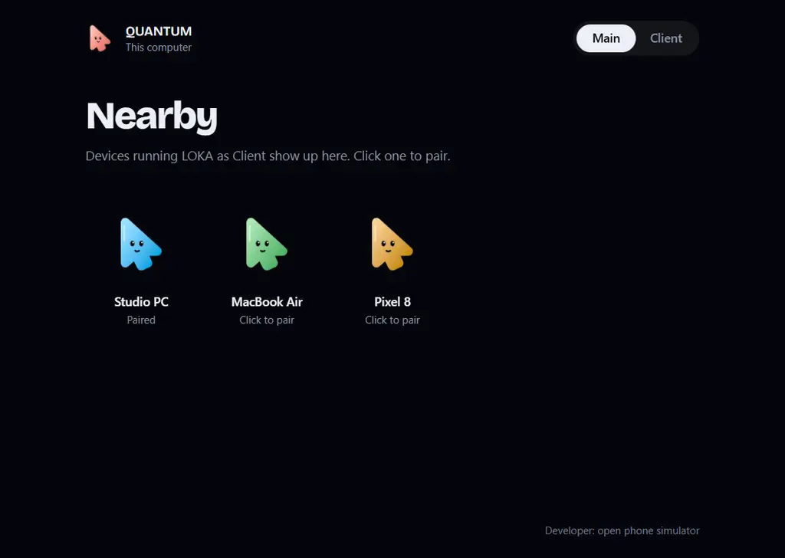

One mouse. Every screen on your desk.Satu mouse. Semua layar di mejamu.
Push the cursor through a glowing edge of your screen and it lands on the computer next to it. The keyboard follows.Dorong kursor melewati tepi layar yang menyala, dan kursor pindah ke komputer di sebelahnya. Keyboard ikut pindah.
Install LOKA on each computer, all on the same network. Any of them can drive the others.Pasang LOKA di setiap komputer dalam jaringan yang sama. Komputer mana pun bisa mengendalikan yang lain.
LOKA

Everything a desk of computers needs.Semua yang dibutuhkan meja penuh komputer.
Bezel Portal
Only the stretch of edge you mark is a door, so the rest of the edge works normally.Hanya bagian tepi yang kamu tandai yang menjadi pintu, sisanya tetap normal.
Keyboard and clipboard followKeyboard dan clipboard ikut
Typing goes to whichever device has the cursor, and what you copy comes along: text, pictures and files. Recent clipboard keeps your last 12 copies, and Ctrl+Alt+V pastes what just arrived. Ctrl acts as ⌘ on a Mac, Mac trackpad gestures cross over, and tapping Ctrl twice always brings the cursor home.Ketikan masuk ke perangkat tempat kursor berada, dan yang kamu salin ikut terbawa: teks, gambar, dan file. Recent clipboard menyimpan 12 salinan terakhir, dan Ctrl+Alt+V menempel yang baru tiba. Ctrl jadi ⌘ di Mac, gestur trackpad Mac ikut menyeberang, dan tekan Ctrl dua kali selalu memulangkan kursor.
One desk, more devicesSatu meja, banyak perangkat
Any computer can drive any other. Place a third one next to the second and the cursor keeps going: PC to laptop to Mac. The tray can take control of any of them without touching the edge.Komputer mana pun bisa mengendalikan yang lain. Taruh komputer ketiga di sebelah yang kedua dan kursor terus berjalan: PC ke laptop ke Mac. Menu tray bisa mengambil alih perangkat mana pun tanpa menyentuh tepi.
Drop files on the edgeLempar file ke tepi
Drag files past the glow and drop them in any folder or app on the other computer, or let go on the glow and they land in your chosen folder. Big files stream in as they arrive. Also from Explorer's Send to or Finder's Open With. Nothing gets overwritten.Seret file melewati garis yang menyala lalu lepas di folder atau aplikasi mana pun di komputer lain, atau lepas di garisnya dan semuanya masuk ke folder pilihanmu. File besar langsung mengalir sambil terkirim. Bisa juga lewat Send to di Explorer atau Open With di Finder. Tidak ada yang tertimpa.
Share more, only if you wantBerbagi lebih, kalau kamu mau
A folder that opens as a drive, your sound on the other speakers, your notifications, your microphone in calls on the other computer, a terminal, and Wake-on-LAN for a sleeping one. Everything starts off.Folder yang terbuka sebagai drive, suaramu di speaker komputer lain, notifikasimu, mikrofonmu untuk call di komputer lain, terminal, dan Wake-on-LAN untuk yang sedang tidur. Semuanya mati sampai kamu nyalakan.
A link that noticesKoneksi yang tahu diri
If the other computer sleeps, drops off Wi-Fi or freezes, the cursor comes home within about 3 seconds and nothing stays pressed over there. Switching Wi-Fi mid-session keeps going.Kalau komputer lain tidur, lepas dari Wi-Fi, atau macet, kursor pulang dalam sekitar 3 detik dan tidak ada tombol yang tertahan di sana. Pindah Wi-Fi di tengah sesi tetap jalan.
Your glow, your wayGlow sesukamu
Choose the glow colour, how see-through it is, and how a crossing feels: Ripple, Pulse or Calm. The app takes on your colour.Pilih warna glow, seberapa transparan, dan animasi saat menyeberang: Ripple, Pulse, atau Calm. Aplikasi ikut warnamu.
Feels at homeTerasa native
Its own title bar, a soft tick on every click (one tap on the speaker mutes it), and it lives in the tray, sharing in the background.Title bar sendiri, bunyi "tik" pelan di setiap klik (sekali ketuk speaker untuk mematikannya), dan tinggal di tray, tetap berbagi di latar belakang.
Stays on your networkTetap di jaringanmu
Devices talk directly over your LAN, encrypted and pinned to each paired device. No account, no server, no cloud.Perangkat terhubung langsung lewat LAN, terenkripsi dan terikat ke tiap perangkat pasangan. Tanpa akun, tanpa server, tanpa cloud.
Open sourceOpen source
Apache 2.0. Read it, build it, improve it. Forks keep the credit.Apache 2.0. Baca, build, kembangkan. Fork wajib mencantumkan sumbernya.
Download LOKAUnduh LOKA
Install it on every computer you want to share the mouse with.Pasang di setiap komputer yang ingin berbagi mouse.
Windows
Windows 10 or 11, 64-bit. Installer (.exe) or .msi.Windows 10 atau 11, 64-bit. Installer (.exe) atau .msi.
If SmartScreen warns, choose More info → Run anyway.Jika SmartScreen memperingatkan, pilih More info → Run anyway.
When Windows Firewall asks, tick both Private and Public networks.Saat Windows Firewall bertanya, centang jaringan Private dan Public.
Devices still don't see each other? In LOKA open About → Allow through Windows Firewall.Perangkat masih tidak saling terlihat? Di LOKA buka About → Allow through Windows Firewall.
Apple Silicon and Intel (.dmg).Apple Silicon dan Intel (.dmg).
Open the .dmg and drag LOKA onto Applications. Open it from Applications.Buka .dmg lalu seret LOKA ke Applications. Buka dari folder Applications.
macOS blocks the first launch: click Done. On macOS 15+, go to System Settings → Privacy & Security and click Open Anyway. On 14 and older, right-click LOKA → Open.macOS memblokir saat pertama dibuka: klik Done. Di macOS 15+, buka System Settings → Privacy & Security lalu klik Open Anyway. Di versi 14 ke bawah, klik kanan LOKA → Open.
Allow Accessibility and, on macOS 15+, Local Network.Izinkan Accessibility dan, di macOS 15+, Local Network.
Says “damaged”? Run this in Terminal:Muncul pesan “damaged”? Jalankan di Terminal:
Does the keyboard move with the mouse?Apakah keyboard ikut pindah bersama mouse?
Yes. While the cursor is on another device, every key you press goes there instead. Tapping Ctrl twice (or Ctrl+Alt+Esc) brings both home at once.Ya. Selama kursor ada di perangkat lain, setiap tombol yang ditekan dikirim ke sana. Tekan Ctrl dua kali (atau Ctrl+Alt+Esc) untuk memulangkan keduanya sekaligus.
Can I use three computers or more?Bisa pakai tiga komputer atau lebih?
Yes. Pair them in a row and place a glow on each computer toward its neighbour, e.g. on the PC toward the laptop and on the laptop toward the Mac. The cursor then goes from the PC through the laptop onto the Mac, and back the same way.Bisa. Pair berurutan lalu pasang glow di tiap komputer ke arah tetangganya, misalnya di PC ke arah laptop dan di laptop ke arah Mac. Kursor lalu berjalan dari PC lewat laptop ke Mac, dan pulang lewat jalan yang sama.
What if the other computer sleeps or loses Wi-Fi?Bagaimana kalau komputer lain tidur atau putus Wi-Fi?
The cursor comes home within about 3 seconds and nothing stays pressed on the other side. A paired computer that went to sleep gets a Wake up button.Kursor pulang dalam sekitar 3 detik dan tidak ada tombol yang tertahan di seberang. Komputer pasangan yang tertidur punya tombol Wake up.
How do I send a file?Bagaimana cara mengirim file?
Drag files or a folder onto the glowing edge and let go. They are saved in Downloads/LOKA on the paired device. To send the other way, move the cursor onto the other computer and drag files to its edge leading back.Seret file atau folder ke tepi yang menyala lalu lepaskan. Semuanya tersimpan di Downloads/LOKA pada perangkat pasangan. Untuk arah sebaliknya, pindahkan kursor ke komputer lain lalu seret file ke tepinya yang mengarah balik.
Is it safe?Apakah aman?
Only devices you paired can send input or files, and everything stays on your local network. Every connection is encrypted (TLS 1.3) and pinned to the paired device's own certificate; pairing shows the same 6-digit code on both screens.Hanya perangkat yang sudah di-pairing yang bisa mengirim input atau file, dan semuanya tetap di jaringan lokal. Setiap koneksi dienkripsi (TLS 1.3) dan terikat ke sertifikat perangkat pasangan; saat pairing kedua layar menampilkan kode 6 digit yang sama.
Why does macOS ask for Accessibility?Kenapa macOS meminta izin Accessibility?
macOS only lets apps read and move the mouse and keyboard with that permission. Without it LOKA can't hand input over.macOS hanya mengizinkan aplikasi membaca dan menggerakkan mouse serta keyboard dengan izin itu. Tanpanya LOKA tidak bisa memindahkan input.
Can LOKA control a Linux server without a desktop?Bisakah LOKA mengendalikan server Linux tanpa desktop?
Yes. Run sudo loka --headless on the server, pair from LOKA on another computer and type y when the code matches. Push the cursor off the edge you placed for it, and your keyboard types on the server's console.Bisa. Jalankan sudo loka --headless di server, pair dari LOKA di komputer lain lalu ketik y kalau kodenya sama. Dorong kursor ke tepi yang kamu atur untuknya, dan keyboard kamu mengetik di console server.
Can't see the other computer?Komputer lain tidak terlihat?
Both must be on the same network. On Windows, allow LOKA through the firewall (About → Allow through Windows Firewall). Guest Wi-Fi and routers with “client isolation” block discovery: LOKA shows This computer's address (e.g. 192.168.1.20); type it into Add by IP on the other computer.Keduanya harus di jaringan yang sama. Di Windows, izinkan LOKA lewat firewall (About → Allow through Windows Firewall). Wi-Fi tamu dan router dengan “client isolation” memblokir pencarian perangkat: LOKA menampilkan This computer's address (mis. 192.168.1.20); ketik alamat itu di Add by IP pada komputer lain.
macOS says LOKA is damaged or can't be openedmacOS bilang LOKA rusak atau tidak bisa dibuka
LOKA isn't notarized by Apple yet. Click Done (not Move to Trash), then System Settings → Privacy & Security → Open Anyway. If it says “damaged”, run xattr -dr com.apple.quarantine /Applications/LOKA.app in Terminal.LOKA belum dinotarisasi Apple. Klik Done (jangan Move to Trash), lalu System Settings → Privacy & Security → Open Anyway. Jika muncul “damaged”, jalankan xattr -dr com.apple.quarantine /Applications/LOKA.app di Terminal.
Mouse stopped crossing after updating on Mac?Mouse tidak bisa pindah lagi setelah update di Mac?
Each version gets a new identity on macOS. In Privacy & Security → Accessibility, remove LOKA with the − button, then turn it on again.Setiap versi punya identitas baru di macOS. Di Privacy & Security → Accessibility, hapus LOKA dengan tombol −, lalu aktifkan lagi.
What about iPhone, iPad and Android?Bagaimana dengan iPhone, iPad, dan Android?
Android is planned. iOS does not let apps control a device's input, so iPhone and iPad can't be controlled.Android direncanakan. iOS tidak mengizinkan aplikasi mengendalikan input perangkat, jadi iPhone dan iPad tidak bisa dikendalikan.